Catálogo de Sensores IoT
12 sensores usados em projetos com Arduino, ESP32, Raspberry Pi e CLPs — conceito, funcionamento, especificações, tipo de sinal e aplicações industriais.
Filtrar por categoria
Nenhum sensor encontrado para esta categoria.
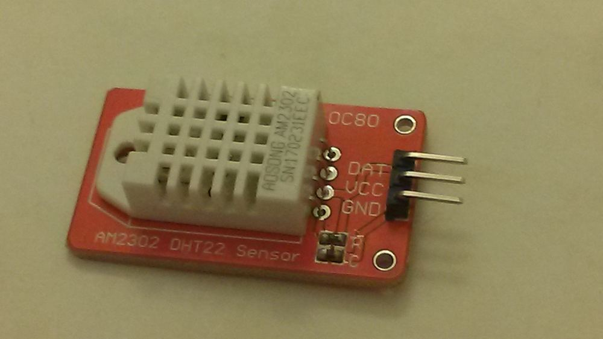
DHT22 (AM2302)
Sensor digital combinado de temperatura e umidade relativa do ar.
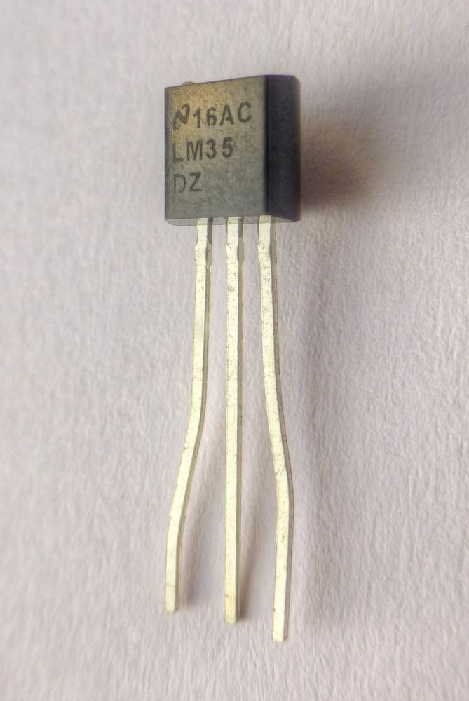
LM35
Circuito integrado com saída analógica linear proporcional à temperatura.
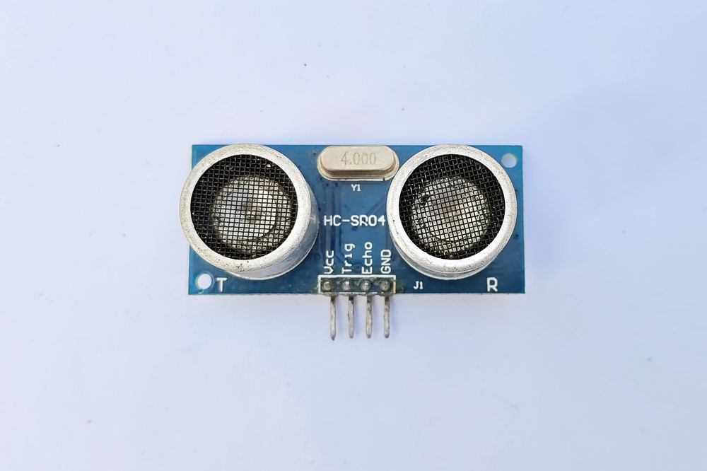
HC-SR04
Sensor ultrassônico de distância por tempo de voo do eco.
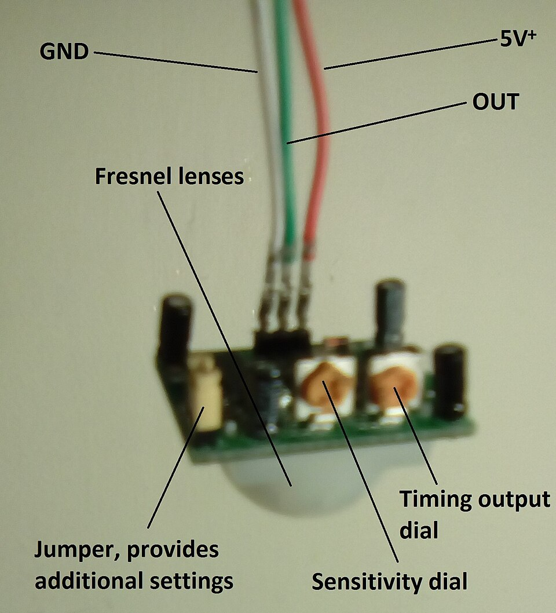
PIR HC-SR501
Sensor passivo infravermelho de detecção de presença e movimento.
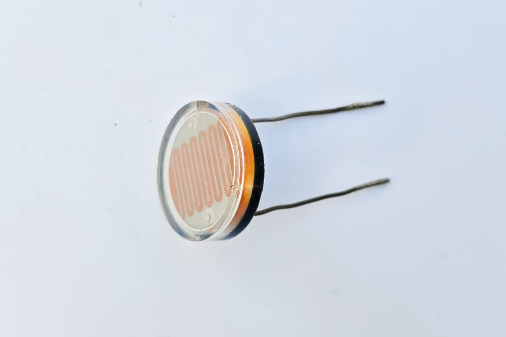
LDR
Fotorresistor cuja resistência varia com a intensidade de luz.
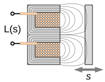
Sensor Indutivo LJ12A3
Detecta objetos metálicos por indução eletromagnética, sem contato.
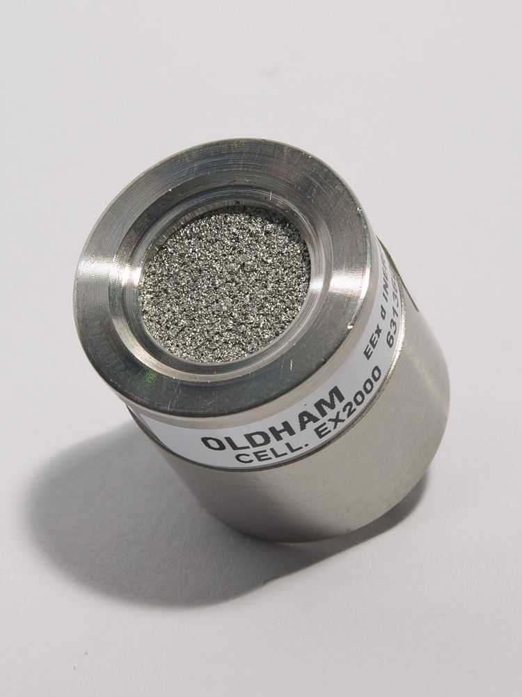
MQ-2
Detecta fumaça e gases combustíveis como GLP, propano e metano.
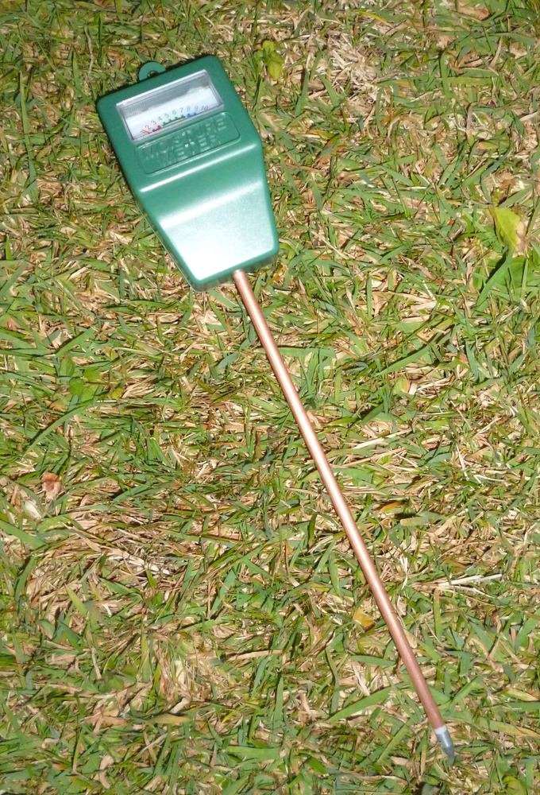
Sensor Capacitivo de Umidade do Solo
Mede a umidade do solo por variação de capacitância.
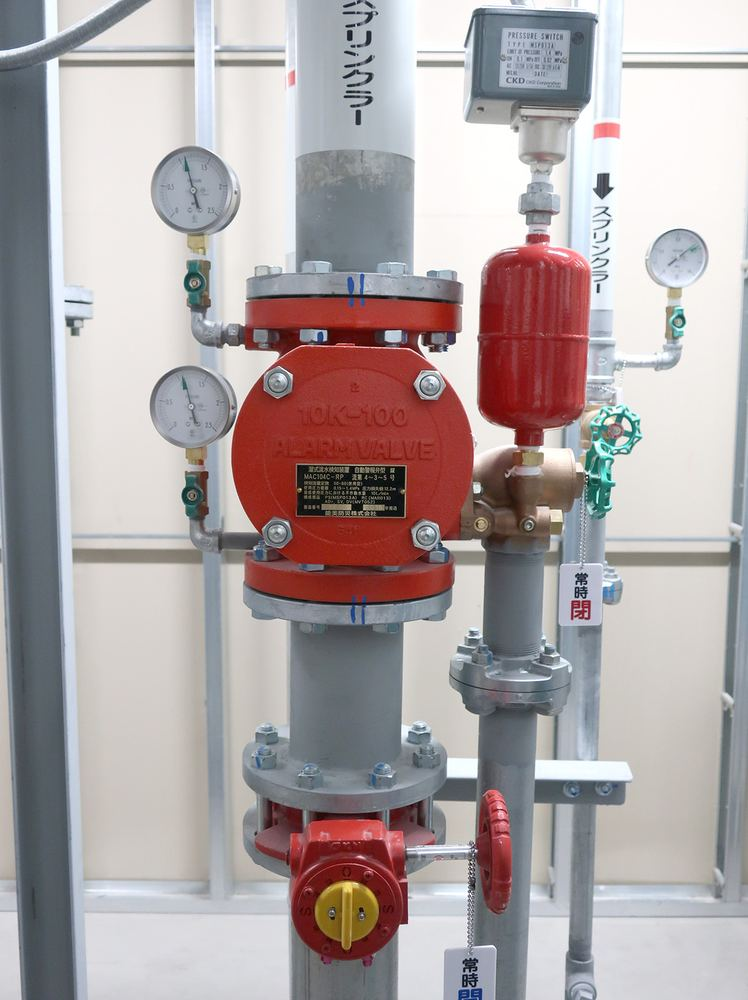
YF-S201
Mede a vazão de água por efeito Hall em uma turbina interna.
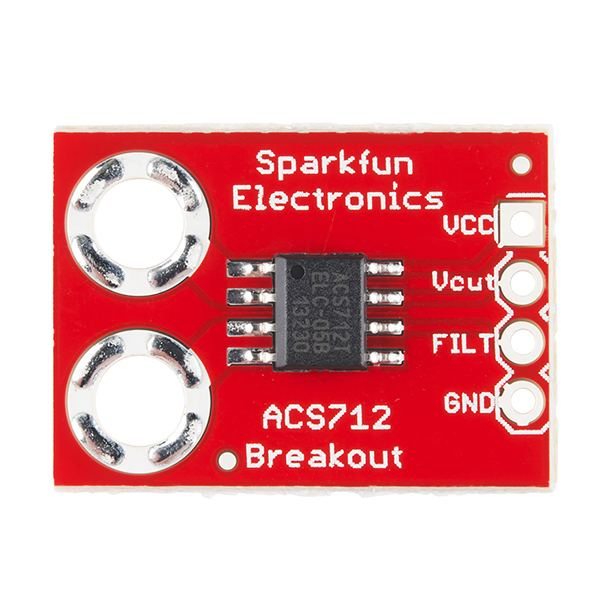
ACS712
Mede corrente elétrica AC/DC por efeito Hall, sem contato direto.
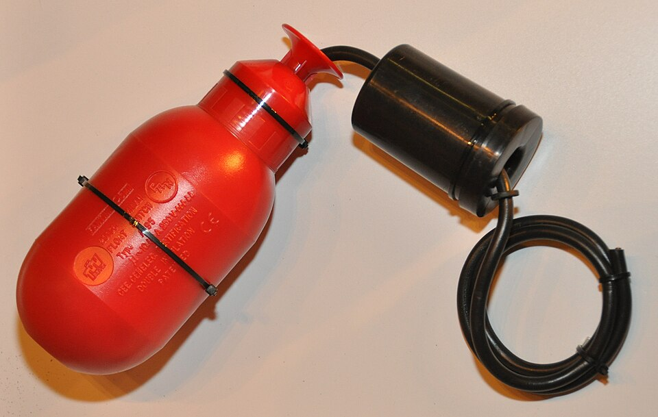
Sensor de Nível (Boia)
Detecta o nível de líquidos por meio de um interruptor magnético flutuante.
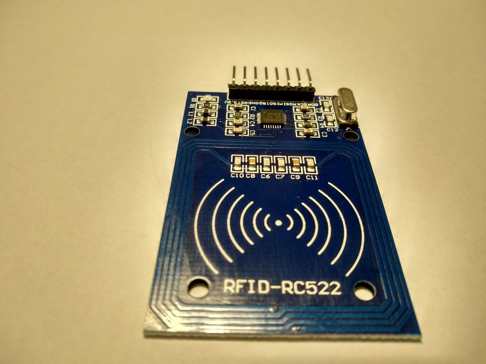
MFRC522
Módulo leitor/gravador RFID de 13.56 MHz para identificação e controle de acesso.